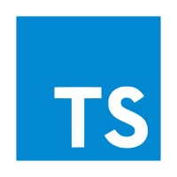
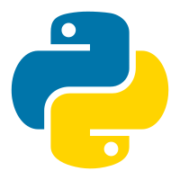

:名称
邹扬光
:出生日期
2003-05-08
:专业
计算机程序设计
介绍:
一个热衷于计算机的大学生，追求多种技术领域，提升自我。通过大量的实践，一次次的挑战创新，将热爱计算机的热情转化为不断进步的动力。
人生格言
“编程可以教会你如何思考”
2023年12月
“全国行业职业技能竞赛 第四届全国信息产业新技术职业技能竞赛 计算机程序设计员S (Python) 方向 赛项” ,荣获“优胜奖”。
2024年5月
“第26届科技节白云首届AI+数字技术应用创新技能竞赛”，荣获”一等奖“
2024年6月
“第26届科技节”,荣获“白云十大校园小工匠”
技能概览
“我掌握的编程语言”
// TypeScript，严谨而不失灵活，如同一位细心规划每一步的智者，既确保了秩序又拥抱了创新的可能性。
const hello : string = "你好，世界！"
console.log(hello)

// C#像是位干练的工程师，结构严谨，功能强大，总能以高效的方式解决问题，同时保持优雅和简洁。
string hello="你好，世界！";
Console.WriteLine(hello);
# Python就像是一位多才多艺的艺术家，既能够创造出简洁优雅的代码，又能够处理复杂的数据科学和机器学习任务。
它以简洁的语法和丰富的库资源，吸引着众多开发者投身于它的怀抱，用Python绘制的每一行代码都像是艺术作品的一部分"
hello = "你好，世界！"
print(hello)

编程工具
- HBuilder X
★★★★☆
- Visual Studio Code
★★★★★
- Visual Studio
★★★★☆
- Py Charm
★★★★☆
- Web Storm
★★★★☆
-
有趣的代码
试试拖拽他们
HBuilder X
Visual Studio Code
HBuilder X
Visual Studio Code
Visual Studio
Py Charm
Web Storm
Edge
“学习编程不仅仅是为了成为一名程序员，它是为了成为一个更好的思考者。” — 尼克·博斯特罗姆